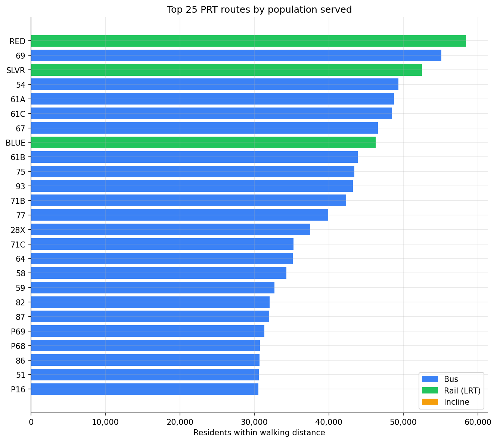
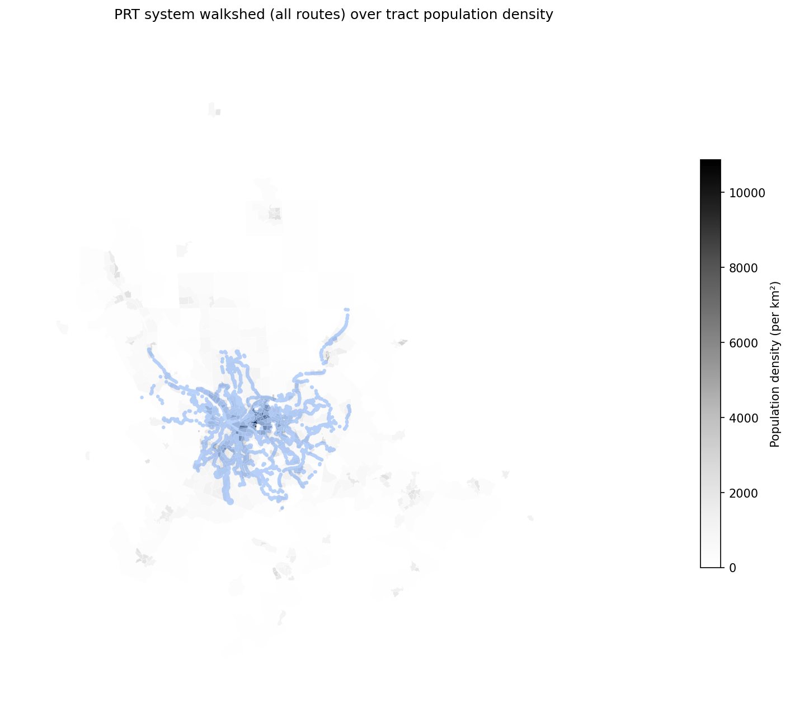

Analysis
44 - Route Population Reach
Coverage: Coverage window unavailable for this page.
Built 2026-05-15 18:36 UTC · Commit 2317a81
Page Navigation
Analysis Navigation
Data Provenance
flowchart LR
44_route_population_reach(["44 - Route Population Reach"])
t_stops[("stops")] --> 44_route_population_reach
01_data_ingestion[["Data Ingestion"]] --> t_stops
u1_01_data_ingestion[/"data/routes_by_month.csv"/] --> 01_data_ingestion
u2_01_data_ingestion[/"data/PRT_Current_Routes_Full_System_de0e48fcbed24ebc8b0d933e47b56682.csv"/] --> 01_data_ingestion
u3_01_data_ingestion[/"data/Transit_stops_(current)_by_route_e040ee029227468ebf9d217402a82fa9.csv"/] --> 01_data_ingestion
u4_01_data_ingestion[/"data/PRT_Stop_Reference_Lookup_Table.csv"/] --> 01_data_ingestion
u5_01_data_ingestion[/"data/average-ridership/12bb84ed-397e-435c-8d1b-8ce543108698.csv"/] --> 01_data_ingestion
t_route_stops[("route_stops")] --> 44_route_population_reach
01_data_ingestion[["Data Ingestion"]] --> t_route_stops
t_routes[("routes")] --> 44_route_population_reach
01_data_ingestion[["Data Ingestion"]] --> t_routes
t_census_tracts[("census_tracts")] --> 44_route_population_reach
d1_44_route_population_reach(("geopandas (lib)")) --> 44_route_population_reach
d2_44_route_population_reach(("shapely (lib)")) --> 44_route_population_reach
d3_44_route_population_reach(("polars (lib)")) --> 44_route_population_reach
d4_44_route_population_reach(("matplotlib (lib)")) --> 44_route_population_reach
classDef page fill:#dbeafe,stroke:#1d4ed8,color:#1e3a8a,stroke-width:2px;
classDef table fill:#ecfeff,stroke:#0e7490,color:#164e63;
classDef dep fill:#fff7ed,stroke:#c2410c,color:#7c2d12,stroke-dasharray: 4 2;
classDef file fill:#eef2ff,stroke:#6366f1,color:#3730a3;
classDef api fill:#f0fdf4,stroke:#16a34a,color:#14532d;
classDef pipeline fill:#f5f3ff,stroke:#7c3aed,color:#4c1d95;
class 44_route_population_reach page;
class t_census_tracts,t_route_stops,t_routes,t_stops table;
class d1_44_route_population_reach,d2_44_route_population_reach,d3_44_route_population_reach,d4_44_route_population_reach dep;
class u1_01_data_ingestion,u2_01_data_ingestion,u3_01_data_ingestion,u4_01_data_ingestion,u5_01_data_ingestion file;
class 01_data_ingestion pipeline;
Findings
Findings: Route Population Reach
Summary
Each PRT route's resident population reach was estimated by buffering its stops by ¼ mile (bus) or ½ mile (rail/incline), dissolving the buffers per route, and apportioning ACS 5-year (2018–2022) tract population to those walksheds via areal interpolation. The top-reaching routes are concentrated in the Pittsburgh core: light-rail RED (58k), bus 69 (55k), light-rail SLVR (53k), and the 54 / 61A / 61C corridors all exceed 48,000 residents within walking distance.
Key Numbers
- 100 routes scored across the PRT system using 6,466 stops and 669 census tracts in Allegheny + Beaver + Butler + Washington + Westmoreland counties (5-county population: 2.17M).
- Median route reach: 21,393 residents. Mean: 23,943.
- Top route by total reach: RED Line (LRT) — 58,425 residents across 59 stops.
- Top bus route by total reach: Route 69 — 55,088 residents across 209 stops.
- Most efficient reach (population per stop): Mon Incline (2,347), then Duquesne Incline (1,343), then BLUE Line (1,028). Bus routes top out at ~310 residents/stop (61C).
- Lowest reach: DQI (2,686), O1 (3,015), 18 Manchester (4,169) — short or specialty routes.
Observations
- Light rail is structurally efficient. Despite having far fewer stops than the busiest bus routes (~45–60 vs ~200), the RED, SLVR, and BLUE lines reach as many or more residents because the larger ½-mile rail walkshed and the South Hills' density combine to broaden each station's catchment.
- Bus reach concentrates on the Oakland–East End corridor and cross-town spines. The 61A/B/C/67 group (Oakland trunk to Squirrel Hill / Homestead / Swissvale) and routes 54 (north-south crosstown) and 75 (Oakland–Bloomfield) all exceed 43,000 — these are the routes whose disruptions affect the most people.
- Inclines have the highest population per stop (2,000+ for the Mon Incline) because they sit in dense Mt. Washington / South Side neighborhoods, but absolute reach is small (only 2 stops each).
- Route length and stop count predict, but do not determine, reach. Route 18 (Manchester) has 43 stops and reaches only 4,169 — its corridor is in low-density industrial North Side. Route O1 has 7 stops and reaches 3,015 — typical of express park-and-ride routes. Density of the served corridor matters as much as the size of the route.
Caveats
- Walkshed buffers are circular Euclidean (¼ / ½ mile straight-line), not network walking distance. Real walksheds are smaller and irregular — actual usable reach is overstated, especially in areas with rivers, hillsides, or cul-de-sacs (much of Pittsburgh).
- Areal interpolation assumes uniform population within each tract. Tracts in Pittsburgh are small in the urban core but large at the periphery; for outlying tracts (Beaver, Butler), a small overlap may apportion population from areas with no actual residents.
- Reach is not ridership. A route can pass through dense neighborhoods that don't ride it (e.g., affluent areas with high car ownership). For demand-weighted impact, see Analysis 22 (Delay Burden).
- Routes are not mutually exclusive. Summing
population_servedacross all routes (~2.39M) double-counts residents served by multiple routes — the figure exceeds the 5-county population and is not a valid system total. - ACS population is 2018–2022 averages. Post-pandemic shifts (e.g., downtown depopulation) are partially captured but lag current conditions.
Validation
- Data source verified. TIGER 2022 tract polygons and ACS 5-year B01003_001E pulled live from census.gov; 5-county total of 2.17M matches published Census estimates (Allegheny 1.25M + adjacent ~0.9M).
- Geographic scope matches. All routes' stops fall within the 5-county tract set; no walkshed extends past the loaded tract polygons.
- Null/missing handling. Stops with NULL lat/lon excluded (none observed in current
stopstable). Tracts withpopulationNULL contribute zero. - Aggregates sanity-checked. Top routes are well-known dense-corridor service (Oakland trunk, Mon Valley LRT). Lowest-reach routes are short specialty/express routes — direction of effect matches expectation.
- Surprising results investigated. Light rail outranking the busiest bus route was checked: RED has 59 stops with the larger ½-mile rail buffer, giving it 27.7 km² of walkshed vs. 23.4 km² for bus 69 — the result is consistent with the methodology.
Output

Horizontal bar chart of the top 25 routes by population served, colored by mode.

Map of the union of all PRT route walksheds over census tract population density for the 5-county service area.
No interactive outputs declared.
Per-route stop count, walkshed area, and resident population reached via areal interpolation against ACS 5-year tract population.
Preview CSV
Methods
Methods: Route Population Reach
Question
Which PRT routes serve the most residents? That is, for each route, how many people live within walking distance of any stop on the route, and how do routes rank on this measure?
Approach
- Build a stop-level point geometry from
stops.latitude/stops.longitude(WGS84, EPSG:4326), reprojected to a meter-based CRS appropriate for Allegheny County (EPSG:32617, UTM 17N). - Buffer each stop by 400 m (≈¼ mile, the standard transit walkshed for bus stops). For rail stops (mode =
RAIL,INCLINE), use 800 m (≈½ mile). - Dissolve all buffers belonging to a single route (joined via
route_stops) into one route-level walkshed polygon, so overlapping stop buffers on the same route are not double-counted. - Intersect each route walkshed with 2020 census tract polygons (ACS 5-year 2018–2022 vintage, Allegheny County + adjacent counties). For each tract, compute the share of tract land area covered by the walkshed and apportion tract population by that share (areal interpolation).
- Sum apportioned population across tracts to produce a
population_servedvalue per route. - Report alongside
stop_count,route_length_km, andpopulation_per_stopto distinguish routes that reach many people because they are long vs. because they traverse dense areas. - Rank routes; produce both a system-wide table and a top-25 chart. Stratify by mode (BUS vs. RAIL/INCLINE) since the buffer radius differs.
Data
| Name | Description | Source |
|---|---|---|
stops |
Stop coordinates and mode | prt.db table |
route_stops |
Links routes to stops | prt.db table |
routes |
Route mode (BUS/RAIL/LRT/INCLINE) for buffer-radius selection | prt.db table |
census_tracts |
2020 TIGER/Line tract polygons + ACS 5-year (2018–2022) B01003_001E total population, Allegheny + Washington + Westmoreland + Beaver + Butler counties. Materialized into prt.db by a new ingestion step at pipeline/10_census_tracts/. Raw shapefiles + ACS pulls cached under data/census-tracts/. |
New prt.db table (US Census source) |
Filters:
- Exclude stops with NULL lat/lon.
- Exclude tracts with zero land area (water-only tracts).
Output
output/route_population_reach.csv-- one row per route:route_id,mode,stop_count,route_length_km,walkshed_area_km2,population_served,population_per_stop.output/route_population_reach_top25.png-- horizontal bar chart of the top 25 routes bypopulation_served, colored by mode.output/walkshed_map.png-- map showing the union of all route walksheds over Allegheny County tract population density, for visual sanity-check.
Source Code
|
Sources
| Name | Type | Why It Matters | Owner | Freshness | Caveat |
|---|---|---|---|---|---|
| stops | table | Primary analytical table used in this page's computations. | Produced by Data Ingestion. | Updated when the producing pipeline step is rerun. | Coverage depends on upstream source availability and ETL assumptions. |
Upstream sources (5)
|
|||||
| route_stops | table | Primary analytical table used in this page's computations. | Produced by Data Ingestion. | Updated when the producing pipeline step is rerun. | Coverage depends on upstream source availability and ETL assumptions. |
Upstream sources (5)
|
|||||
| routes | table | Primary analytical table used in this page's computations. | Produced by Data Ingestion. | Updated when the producing pipeline step is rerun. | Coverage depends on upstream source availability and ETL assumptions. |
Upstream sources (5)
|
|||||
| census_tracts | table | Primary analytical table used in this page's computations. | Project pipeline owner not linked. | Refresh cadence unknown. | Coverage depends on upstream source availability and ETL assumptions. |
| geopandas | dependency | Runtime dependency required for this page's pipeline or analysis code. | Open-source Python ecosystem maintainers. | Version pinned by project environment until dependency updates are applied. | Library updates may change behavior or defaults. |
| shapely | dependency | Runtime dependency required for this page's pipeline or analysis code. | Open-source Python ecosystem maintainers. | Version pinned by project environment until dependency updates are applied. | Library updates may change behavior or defaults. |
| polars | dependency | Runtime dependency required for this page's pipeline or analysis code. | Open-source Python ecosystem maintainers. | Version pinned by project environment until dependency updates are applied. | Library updates may change behavior or defaults. |
| matplotlib | dependency | Runtime dependency required for this page's pipeline or analysis code. | Open-source Python ecosystem maintainers. | Version pinned by project environment until dependency updates are applied. | Library updates may change behavior or defaults. |